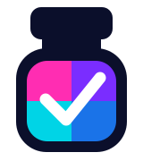

A place for
every pharmacy
person.
A confident, colourful identity that brings our pharmacy community together. Recognisable in every role. Consistent on every screen.

01 / COLOUR WITH MEANING
Find your place in the palette.
Choose a persona to see its accent travel
through the examples below.
Persona colours identify people and workspaces. Success, errors and certificate status keep their own separate meanings.
02 / THE SIGNATURE
One mark. Ready for everywhere.
The bottle stays whole. Keep all four quadrants in the master mark; persona identity belongs around it.
Clear space. Leave at least one cap-height around the mark. Use the bottle alone when the wordmark becomes too small.
Review interpretation. These clean vector formats follow your reference. The outlined wordmark is a proposed refinement, ready for your feedback.
03 / A SYSTEM THAT WORKS TOGETHER
The brand, in everyday use.
04 / A VISUAL LANGUAGE FOR EXPERTISE
Every skill has a signature.
27 distinct skills. One considered icon family.
Always paired with a clear, readable label.
A skill icon is not a verification badge. Certificate requirements and recorded verification remain separate. Vendor software uses labelled monograms, not invented vendor logos.
05 / THE QUIET CONSISTENCY
Confident type. Room to breathe.
A little clarity goes a long way.
ABCDEFGHIJKLMNOPQRSTUVWXYZ
abcdefghijklmnopqrstuvwxyz · 0123456789
A simple, shared rhythm.
Comfortable reading sizes. Clear headings. A 4-point spacing system that keeps every screen related.
Controls12
Cards24
Features
06 / CONSISTENCY IN THE DETAILS
Small moments. Same identity.
Try the form, open a dialog, switch theme.
These are local component demonstrations.
Actions & feedback
One clear primary action, supported by quieter alternatives.
Skills and certificate status are separate, even when shown together.
A helpful empty state explains what happens next.